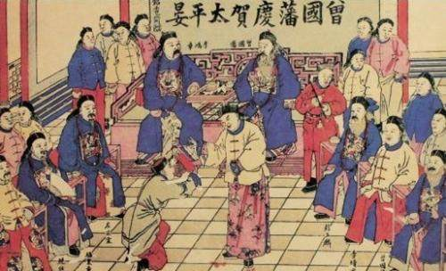

原文链接：http://baijiahao.baidu.com/s?id=1603587697924605144&wfr=spider&for=pc 轻用其芒，深藏若拙这句的意思是说，要谨慎显露自己的锋芒，越是在大权在手，高人一等之时，越应该谨慎谦虚。 对此，左宗棠就是一个很好的例证，左宗棠一介白丁的时候，经常口出狂言，狂傲不拘。后来他官及三品，言事则小心翼翼，如履薄冰。 在年轻的时候，我们可能一无所有，需要努力打拼，这个时候需要一定的张扬高调，他会带给我们更多的机会和自信。然而当你功成名就 不再年轻之时，就应该学者收敛自己的锋芒，不要目中无人 傲慢无礼，而要做到平易近人，乐善好施，否则必定会走向灭亡。 天下古今之庸人，皆以一惰字致败；天下古今之才人，皆以一傲字致败。对于没有什么才气的普通人而言，唯有勤奋工作才能事业有成，所以最忌讳的就是一个“懒”字；而对于那些有才之人，虽然可以比较轻松的获得成功，但是如果孤傲自大，目中无人，又固步自封 不肯向他人学习，也必定以失败而告终。 这样的例子其实不胜枚举。尽管是那些有才华的人，如果停止脚步，也一样没法走向成功，甚至是步步皆退。所以说勤奋并谦虚的取人之长，补己之短，才是成功之举。 利可共而不可独，谋可寡而不可众利益可以和别人分享，但是不能独霸，决策一定要交给一个深谋远虑的人，而不能摆愚忠人面前，各抒己见。 俗话说，财布施得财富。越是乐于跟别人分享自己利益的人，越容易得到大家的追捧，从而可以获得更多的机会和更大的利益。如果利益独吞，就很容易被群起而攻之，财命双丢。  然而，策略确实恰恰相反。做决策时如果总是各抒己见，最后的决定不免不伦不类，尤其不要让那些见识低下 心胸狭窄 没有气度和胸怀的扰乱决策，这样只会浪费时间，而且错失良机。所以，决策一定要交给那些有深谋远虑的人，快准狠。 众争之地勿往，久利之事勿为这句话在互联网时代尤其适用，现在是创业的大浪潮，市场一旦出现某个机会就会有大量的人蜂拥而至。但现在社会变化太快了，任何一个机会一旦被大家争相追逐，说明它已经不再是机会了，这就是所谓的众争之地勿往。 同样的道理，如果一件事一直都能让大家轻松获利，说明后来者一定都是来接盘的，如同击鼓传花的游戏，都在找下一个接盘人，这时你千万不要轻易插足进去，比如前些年兴起的P2P、民间借贷等等。 从前种种，譬如昨日死；以后种种，譬如今日生其实，这句话是曾国藩借用袁了凡之言。意思是说：从前的往事再多，到今天为止就全部无关了。以后的事情，不管发生什么，从今天开始就当重头来过。 这就告诉大家要活在当下，不去追忆过去的荣耀，也不悔恨过去的过错，更不去盲目的憧憬未来。 有一个信徒问佛祖释迦牟尼：“您常常教我们活在当下，那究竟怎么做才算活在当下呢？”佛祖说：“吃饭就是吃饭，睡觉就是睡觉，如此而已。” 假如你能总是把握着现在，你就能成为一个幸福的人。 下一篇→ Please enable JavaScript to view the comments powered by Disqus. 目录 1. 轻用其芒，深藏若拙2. 天下古今之庸人，皆以一惰字致败；天下古今之才人，皆以一傲字致败。3. 利可共而不可独，谋可寡而不可众4. 众争之地勿往，久利之事勿为5. 从前种种，譬如昨日死；以后种种，譬如今日生